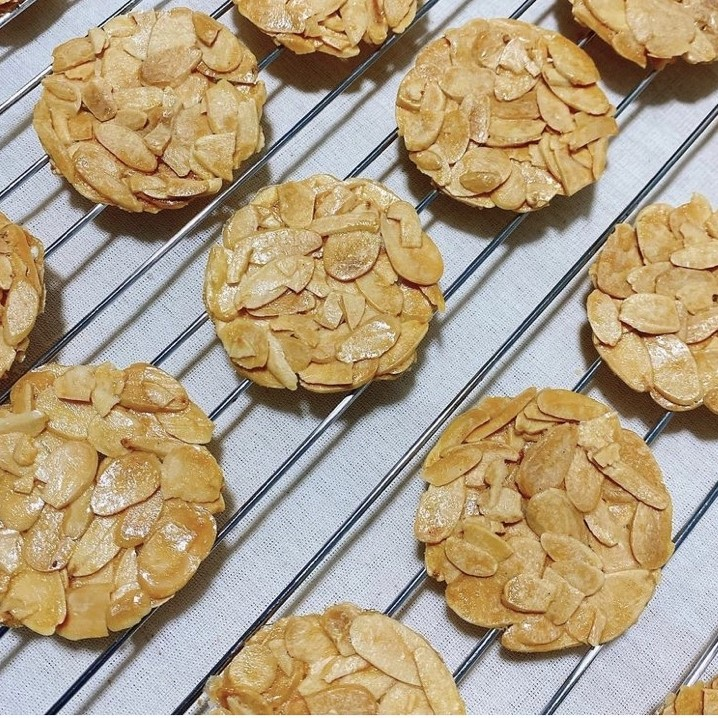

ตุอีล

ส่วนผสม
⋆ แป้งสาลี 50 กรัม
⋆ เนย 50 กรัม
⋆ น้ำตาล 80 กรัม
⋆ ไข่ขาว 2 ฟอง
⋆ อัลมอนด์สไลด์ 40 กรัม
วิธีทำ
1) ละลายเนย และทิ้งไว้ให้เย็น
2) ผสม ไข่ขาวกับน้ำตาลให้เข้ากัน อย่าตีจนเป็นฟอง
3) เติมเนยและแป้งสลับกันจนหมด แล้วใส่อัลมอนด์ ค่อยๆคนไม่งั้นอัลมอนด์จะหัก
4) อบด้วยไฟบนล่าง 140องศา ประมาณ 10-15นาที